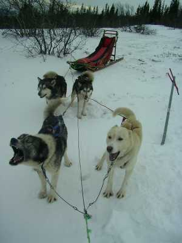

| Home | Kontakt | Steckbrief |
| Wandern/Trekking |
| Klettern/Klettersteige |
| Kanu |
| Fahrradtouren |
| Rucksack-Reisen |
| Touren mit Kindern |
| Wissenswertes |
| Werbung |
Jede Menge BilderDie Bilder sind von Bettina, Olaf und JürgenNach 25 Stunden Anreise beim Kennenlernfrühstück Anschließender Verdauungsspaziergang Gefrorener Badesee bei Sörsjön  Lichtstimmung 1 Lichtstimmung 2  Die Sonne zeigt, was sie kann Vorbereitungen Beladen der Schlitten Noch mal kurz die Hunde motiviert  Aufrüsten der Schlitten Erster Zwischenstopp Einer denkt, das wars schon Snacks für die Hunde und Tee für die Musher Weiter gehts Dann wieder mal eine Zwangspause Die letzten Meter zur Hütte Beim dreistündigen Versuch die Petromax zum leuchten zu bringen Nach einer Stunde Nach zwei Stunden und kurz vor der Aufgabe Hinauf ins Fjäll Langsam werden es weniger Bäume Die Hunde sind immer noch gut drauf Obwohl starker Gegenwind herrschte Hauptsache die Sonne ist zu sehen Manchmal wurd die Sicht auch schlechter Auf dem Fjäll Kurze Pause im Windschatten Regelmäßge Kontrolle der Hundepfoten Unsere gemütliche Hütte für die Nacht Zubereitung des Hundefutters mit dem Fleischwolf/Axt  Die Hunde sind auch am letzten Tag heiß aufs Laufen Die gefährlich Bergabstelle wird zu Fuß kontrolliert...  ... und daher werden die Schlitten fixiert Der eingefrorene Wasserfall Njupeskär. Großmutter warum hast Du so große Füße Weil ich mit Schneeschuhen unterwegs bin Schneeschuhtour auf den Stätsjan Nur noch der Gipfelgrat Dann ist es geschafft Die anderen sind schon oben Auf Langlaufskiern in den Loipen von Grövelsjön |